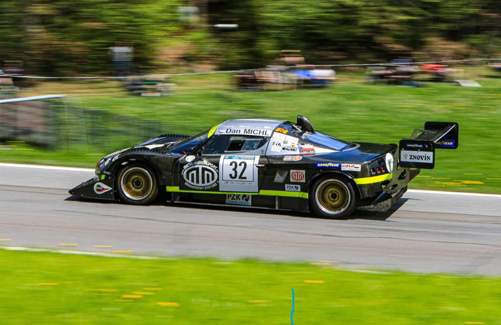
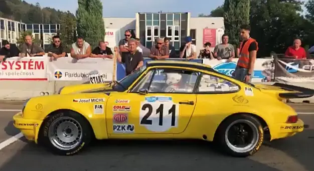
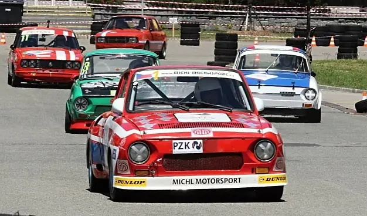

Závodní vozy
S čím vyráží tým Michl Motorsport na závodní tratě?
Aktuální sezóna
Lotus Elise V8 Hartley - 430 hp / 11000 rpm / 750 kg
Na upraveném podvozku vozu Lotus Elise je týmem Michl Motorsport (Milan Klejch, Dan Michl) vyvinutá a postavená karbonová karoserie.
Motor o výkonu 450k/10000rpm má objem 2,8l a skládá se ve skutečnosti ze dvou do V složených motorů pocházejících z motocyklu Suzuki Hayabusa. Automobil váží 750kg.
Dan Michl s Lotusem Elise získal na evropských kopcích
několik titulů Vítěze Trofeje FIA v kategorii 2.

Videa:
- Rechberg Rennen 2025
- GHD Gorjanci 2024
- Trento Bondone 2023
- Coppa Paolino Teodori / Ascoli Piceno 2022 s drobnou kolizí se svodidly v poslední zatáčce
- Trento Bondone 2021 - mokrý závod na nejdelším evropském kopci (17,3 km)
- Ecce Homo Šternberk 2021
- Buzetski Dani 2019
- Pohled do interiéru vozu ze závodu FIA Masters 2014
- Hill Climb Monsters - sestřih závodů r. 2017
JOSEF MICHL
Porsche 911 RS
Škoda 130 RS
Historický vůz s dlouholetou závodní tradicí - od konce sedmdesátých let patří mezi špičky ve své třídě
- motor: objem 1289ccm, uložen vzadu, čtyři válce
- výkon: cca 135 při 7500 ot. / min
- vrtání X zdvih: 75,8 X 72

Kontakty:
+420 5 41 42 43 44
PO - PÁ 7:30 - 17


© Michl Motorsport 2025. All rights reserved. | Photos by jAnina michlová